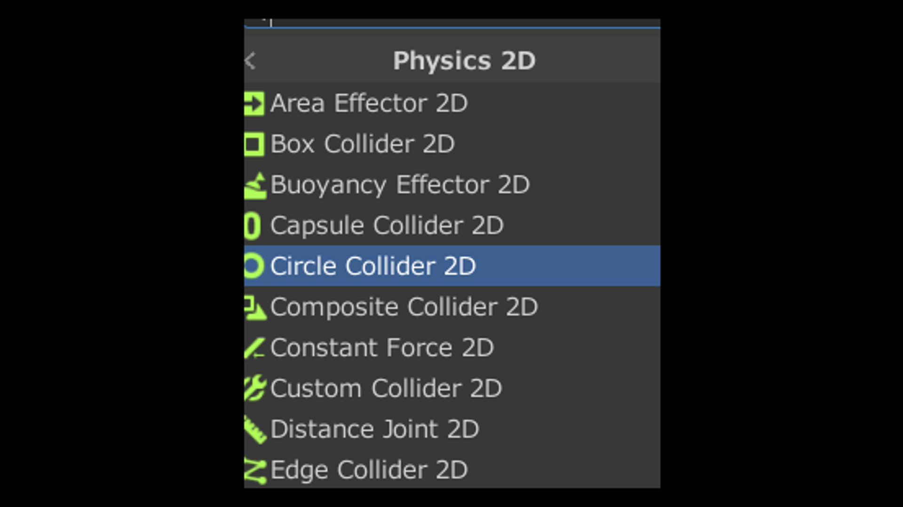

おおむね説明ができたので、ここからもうちょっとゲームらしいものを作っていこうと思います。
今回作ろうと思うのはブロック崩しです。簡単なのであんまり身構えないで大丈夫です。
Projectを新しく作るところからもっかいやってみましょ。そう、UnityHubの右上ボタンですね。
今回も2Dゲームを作るので、2Dを選択。名前を決めたらCreateしてあげてください
今回もまずGameObjectを作りますが、こないだとは違う方法でやってみましょう。
まず、いらすとや等の好きなフリー素材サイトから、ボールやブロックの画像を保存してください。
一応ちゃんと完全フリーの奴でお願いします。
持ってこれたら、一回UnityHubに戻って、
さっき保存した画像が保存されてるフォルダーをエクスプローラーで開いて、UnityHubの上に表示されるようにしてください。
できたら、さっき保存した画像を、ドラッグ&ドロップでUnityHubのAssetsの上に持っていきます。
こんな風にAssetsに画像が出てきたら成功です。これでEditer内でこの画像を使えるようになりました。
ゲームに使いたい画像はこんな風にすれば持ってくることができるので覚えておいてください。
次は、この画像をGameObjectにしてしまいましょう。
Sceneビューになってることをよく確認してください。
そしたら、さっきAssetsに移したボール用の画像をここにドラッグ＆ドロップ。
すると...GameObjectが完成します。
画像をそのままGameObjectにするときは、この方法でやると良いです。
Inspectorの一番上の所に、名前を変えれるところがあります。
画像の名前がそのままになってるので、Ballとかに変えといてあげてください。
もちろん半角じゃないといずれ困ります。
試しにこの状態で再生ボタン押してみてください。....そう、何も起こりません。
本来このゲームのボールって...こう...はずんだりしないとじゃないですか。
というわけで、このボールに物理的特性を付与していきましょう。
さっき作ったボールのInspectorの、一番下を見てみてください。
「Add Component」ってボタンがあると思います。
これは、Unity側が用意しておいてくれたComponentをObjectにつけることができるボタンです。
再生ボタンを押してみると...ボールが下に落っこちて行きました。こうなれば導入は成功です。
ただ勝手に落ちていくのは困るので、重力だけオフにしちゃいましょう。
Inspectorにさっき入れたRigidBody2Dの欄があると思います。
その中にGravity Scaleってのがあると思われます。
これ重力の大きさです。0にすると無重力にできます。
今回重力は使わないので、無重力にしちゃいましょう。
ちょっとわかりにくいんですけど、実はこの球当たり判定がありません。
いろんなものをすり抜けちゃうので、当たり判定をつけてあげましょう。
さっきRigidBody2Dを入れたのと同じ感じでPhysics2Dを開くと、CircleClliderを選択してください。

なんとこのぐらいの単純な形ならこれで当たり判定の完成です。便利ですね。
ちょっと長くなっちゃったのでこの章ここで切りますね。